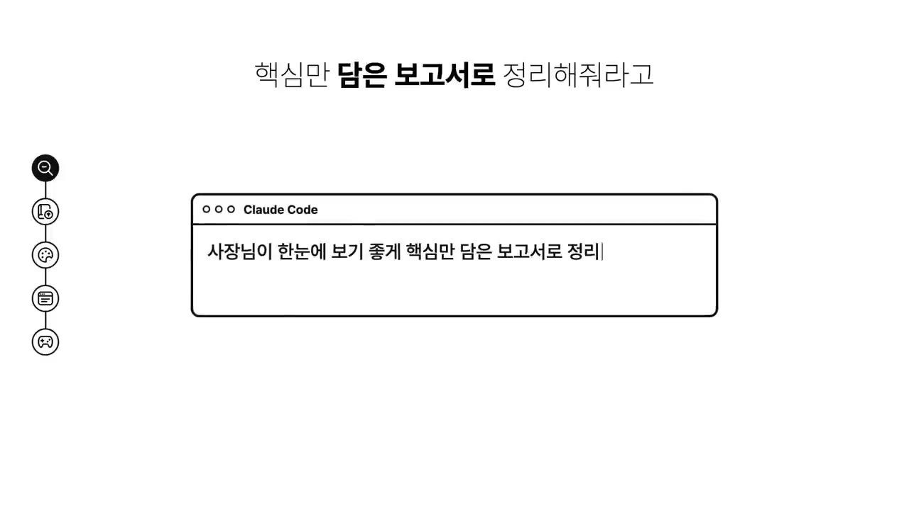
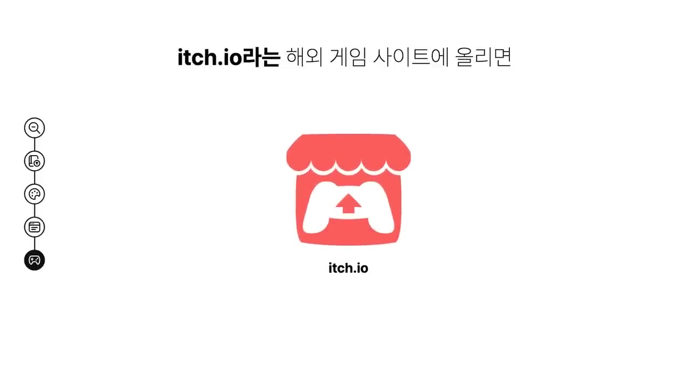

클로드로 당장 수익 만드는 확실한 방법 5가지 (500만원 쓰고 검증했습니다)
🎙️ 자막 대신 영상 음성을 받아써서 정리 (ko (음성 받아쓰기·GPU))
▶ 원본 영상 보기한눈에 보기
- 클로드로 돈 버는 방법 5가지: ① 리서치 대행 ② 디지털 상품 판매 ③ 인스타툰 ④ 수익형 미니 사이트 ⑤ 웹게임 만들기. 뒤로 갈수록 자는 동안에도 돈이 들어오는 구조에 가깝습니다.
- 출발점은 "무엇을 만들까"가 아닙니다. 누가, 왜 돈을 내는가를 먼저 정해야 합니다. 만드는 일은 클로드가 하고, 사람은 누구에게 어떻게 팔지만 생각하면 된다고 말합니다.
- 현금이 가장 빨리 들어오는 방법은 스마트스토어 사장님 대상 키워드 분석 대행입니다. 클로드 리서치로 보고서를 만들어 크몽에 등록하고, 분야는 하나로 좁힙니다.
- 오래 가는 수익은 애드센스를 붙인 미니 사이트를 여러 개 만드는 데서 나옵니다. 영상 제작자는 사이트 하나로 월 평균 10만 원 이상을 법니다. 여기에 체류 시간이 긴 웹게임을 더하면 광고 수익이 커진다고 봅니다.
- 5가지 방법별 프롬프트는 영상 고정 댓글에 무료로 올라와 있습니다.
이런 분께 도움이 됩니다
- 클로드를 요약 정도로만 쓰고 있는데 부업에 활용하고 싶은 분
- 코딩·그림 실력 없이 시작할 수 있는 AI 수익 모델을 비교해 보고 하나를 고르고 싶은 분
핵심 내용
출발점: 누가, 왜 돈을 내는가
- 클로드가 무언가를 만드는 것과 그걸로 돈을 버는 것은 완전히 다른 문제입니다. 상대가 지갑을 열 만한 수준이어야 돈이 됩니다. (0:43)
- 그래서 영상은 방법마다 "돈을 내는 사람과 그 이유"를 함께 설명합니다.
- 대부분 클로드에게 요약만 시키는데, 영상은 이를 "미슐랭 셰프를 모셔 놓고 라면을 끓이게 하는 셈"이라고 표현합니다.
💡 5가지 모두 만드는 건 클로드 몫입니다. 사람이 할 일은 '누구에게 어떻게 팔지'를 정하는 것입니다.
5가지 방법 비교
| 방법 | 돈을 내는 사람 | 판매·등록처 | 특징 |
|---|---|---|---|
| ① 리서치 대행 | 스마트스토어·쇼핑몰 사장님 | 크몽 (참고 사례: 파이버) | 현금이 가장 빠름 |
| ② 디지털 상품 | 템플릿·전자책 구매자 | 크몽 전자책, Etsy(엣시) | 원가 0원, 무한 판매 |
| ③ 인스타툰 | 광고주(은행·증권사·보험사 등) | 인스타그램 | 광고·협찬·공동구매 |
| ④ 미니 사이트 | 구글 애드센스 광고 | 내 사이트 | 한 번 세팅하면 관리 거의 없음 |
| ⑤ 웹게임 | 광고, 판매·후원 | 내 사이트, 이치(itch.io로 추정) | 체류 시간이 길어 광고에 유리 |
① 리서치 대행: 현금이 제일 빠름
- 해외 프리랜서 사이트 파이버(Fiverr)에는 쇼핑몰 키워드 분석 대행 서비스가 있고, 건당 몇만 원짜리 주문이 여러 건씩 밀려 있다고 합니다. (1:11)
- 수요가 있는 이유: 사장님들은 상품 등록할 시간도 모자라서, 어떤 키워드로 검색에 노출돼야 하는지와 경쟁 상품이 어떻게 팔리는지를 대신 조사해 줄 사람이 필요합니다.
- 꿀팁: 모든 분야를 다 한다고 하지 말고 한 분야만 팝니다.
- 예: "스마트스토어 식품 카테고리 키워드 분석 전문"
- 사장님들은 전문가를 찾기 때문에 좁힐수록 오히려 주문이 들어온다고 합니다. (2:05)
- 리서치 켜기
- 상품·시장 입력
- 납품용으로 정리
- 크몽 등록
- 1리서치 켜기
클로드에 접속해 리서치 기능을 켭니다. (1:40)
- 2상품·시장 입력
분석할 상품과 시장을 알려 주면 클로드가 자료 수십 개를 뒤져 상세 보고서를 만듭니다.
- 3납품용으로 정리
보고서를 그대로 주지 않고 "사장님이 한눈에 보기 좋게 핵심만 담은 보고서로 정리해줘"라고 다시 요청합니다.

Claude Code 창에 '사장님이 한눈에 보기 좋게 핵심만 담은 보고서로 정리' 입력 · ▶ 2:00 - 4크몽 등록
이 서비스를 크몽에 등록하면 세팅이 끝납니다.
② 디지털 상품 판매: 원가 0원, 무한 판매
- 사례: Etsy(영상 발음은 '애쉬')에서 다이어리 꾸미기용 PDF를 파는 한 상점이 문을 연 지 약 12개월 만에 약 5만 3천 권을 팔았다고 합니다. (2:23)
- 종이에 인쇄해 쓰는 PDF라 재고·배송·원가가 모두 없습니다. 한 번 만들면 같은 파일이 계속 팔립니다.
- 만들 수 있는 것: 전자책, 체크리스트, 계획표 양식, 노션 템플릿.
- 주의: "아무 주제나 만들면 절대…" 이후 내용은 잘려 있습니다. (자막상 불분명)
- 아이디어 뽑기
- 상품 완성
- 판매 등록
- 1아이디어 뽑기
내가 잘 아는 분야를 알려 주고 "사람들이 돈 주고 살 만한 디지털 상품 아이디어"를 뽑아 달라고 합니다. (2:55)
- 2상품 완성
하나를 골라 목차·내용·디자인까지 클로드와 대화하며 완성합니다. 하루면 충분하다고 합니다.
- 3판매 등록
국내는 크몽 전자책, 해외는 Etsy에 올립니다. Etsy 등록 방법은 설명란 링크(제작자 블로그)를 참고합니다.
③ 인스타툰: 그림이 아니라 컨셉이 핵심
- 사례: 그림을 전혀 못 그리는 주부가 인스타툰으로 작년에 4억 원을 벌었고 홈택스 화면까지 공개했다고 합니다. 그림은 AI가 그려서 한 편 만드는 데 2분이 걸린다고 합니다. (3:36)
- 핵심은 광고주가 돈을 내고 싶어 하는 컨셉입니다.
- 그냥 육아일기 → 일기로 끝남
- "아이 키우며 아낀 돈으로 재테크하는 엄마" → 은행·증권사·보험사 광고가 붙음
- 컨셉만 잘 잡으면 팔로워가 1만 명이 안 돼도 광고를 받는 계정이 많다고 합니다.
- 계정이 커지면 광고·협찬·공동구매로 수익이 이어진다고 합니다.
- 컨셉 역설계
- 대본 받기
- 그림 생성
- 매일 게시
- 1컨셉 역설계
클로드에 내 상황을 알려 주고 "광고주가 붙을 만한 인스타툰 컨셉을 역으로 설계해줘"라고 요청합니다. (4:05)
- 2대본 받기
주제, 캐릭터 설정, 에피소드 대본까지 클로드가 뽑아 줍니다.
- 3그림 생성
이미지 AI에 캐릭터 하나를 정해 그리게 합니다. 영상은 이미지 생성은 ChatGPT가 훨씬 잘한다고 말합니다.
- 4매일 게시
하루에 한 편씩 올립니다.
④ 수익형 미니 사이트: 여러 개로 늘리기
- 클로드 코드로 사이트를 만들고 구글 애드센스 광고를 붙이는 방법입니다. 제작자는 사이트 하나로 매달 평균 10만 원 이상을 번다고 합니다. (4:38)
- 금액보다 중요한 점: 처음 한 번만 세팅하면 관리하지 않아도 수익이 들어옵니다.
- 이 영상에서 가장 강조하는 말: 하나에서 멈추지 말고 2개, 3개, 10개로 늘리라는 것입니다. 10만 원짜리 10개면 월 100만 원이 됩니다. (5:20)
- 불편 하나 고르기
- 클로드 코드로 제작
- 애드센스 심사
- 검색 등록
- 사이트 늘리기
- 1불편 하나 고르기
내가 불편했던 것 딱 하나를 해결하는 사이트를 정합니다.
- 2클로드 코드로 제작
그 사이트를 클로드 코드에게 만들어 달라고 합니다.
- 3애드센스 심사
구글 애드센스 심사를 통과시킵니다.
- 4검색 등록
구글 서치 콘솔과 네이버 서치 어드바이저에 등록해 검색에 노출시킵니다.
- 5사이트 늘리기
같은 방식으로 사이트 수를 늘립니다.
- 전 과정은 제작자의 이전 영상(설명란 링크 https://youtu.be/NsFBIfdAe60)에 있습니다.
⑤ 웹게임 만들기: 체류 시간으로 광고 수익 키우기
- 사례: 1인 개발자 피터 레벨스(Pieter Levels)가 AI에 코딩을 전부 맡겨 3시간 만에 비행기 조종 게임을 만들었습니다. 한 달도 안 돼 연환산 10억 원 이상 매출을 냈다고 합니다. (5:33)
- 수익원: 게임 속 하늘의 광고판을 기업에 판매, 게임 유료 아이템 판매
- 게임이 돈이 되는 이유: 광고 수익은 머무는 시간이 길수록 커지는데, 게임은 한 번 잡으면 10~20분 넘게 합니다. 그래서 방문자 수가 같아도 광고 수익이 더 잘 나온다는 설명입니다.
- 만드는 법: 거창한 기획 대신 퍼즐, 숫자 맞추기, 클릭 게임 같은 간단한 웹게임을 만듭니다. 클로드 코드에 요청하면 10분 정도면 실제로 플레이되는 게임이 나온다고 합니다. (6:31)
- 무엇을 만들지 막막하면 제작자의 레시피 사이트 뽀글닷컴(https://bboggl.com)에서 게임 레시피를 뽑아 붙여 넣으면 됩니다.
- 올릴 곳: ④에서 만든 내 사이트(애드센스 수익 극대화), 해외 게임 사이트 '이치'(itch.io로 추정)에서 판매·후원

- ④와 ⑤를 합치면 방문자가 오래 머물고 광고 수익도 커지는 "최강의 조합"이라고 합니다. (6:55)
따라 해보기
5가지 중 영상에서 단계가 가장 구체적이고 현금이 가장 빠르다고 한 ① 리서치 대행을 기준으로 정리합니다.
준비물
- 클로드 계정. 리서치 기능이 무료 요금제에서 되는지는 영상에 안 나옵니다. (보충: 유료 요금제가 필요할 수 있음)
- 크몽 판매자 계정
- 고를 분야 하나 (예: 스마트스토어 식품 카테고리)
- 고정 댓글의 '리서치 대행' 프롬프트 (선택)
- 소요 시간: 영상에 명시되지 않음
단계별 방법
- 분야 좁히기
- 샘플 리서치
- 납품용 정리
- 크몽 등록
- 주문 처리
- 1분야 좁히기
"스마트스토어 식품 카테고리 키워드 분석 전문"처럼 분야를 하나로 정합니다.
- 2샘플 리서치
클로드에서 리서치 기능을 켜고 분석할 상품과 시장을 입력해 상세 보고서를 받습니다.
- 3납품용 정리
"사장님이 한눈에 보기 좋게 핵심만 담은 보고서로 정리해줘"라고 요청합니다.
- 4크몽 등록
정리한 보고서를 샘플로 삼아 크몽에 서비스를 등록합니다. 등록 화면 작성법은 영상에서 생략됨.
- 5주문 처리
주문이 들어오면 의뢰받은 상품으로 2~3단계를 반복해 납품합니다. (보충)
따라 할 수 있는지 점검
- ✅ 바로 따라 할 수 있음: 1단계 분야 정하기, 3단계 정리 요청 문구
- ⚠️ 2단계 「샘플 리서치」: 리서치 기능 위치와 요금제 조건, 실제로 입력할 프롬프트 원문이 영상에 없습니다 → 고정 댓글의 프롬프트를 쓰고, 기능 위치는 클로드 입력창 근처 메뉴에서 'Research'를 찾아봅니다. (보충)
- ⚠️ 4단계 「크몽 등록」: 크몽 가입, 판매자 등록, 가격 책정, 상세페이지 작성법이 모두 생략됐습니다 → 크몽 판매자 가이드를 참고하고, 가격은 파이버·크몽의 비슷한 서비스 가격을 검색해 정합니다. (보충)
- ⚠️ 5단계 「주문 처리」: 의뢰인에게 받을 정보(상품 URL, 경쟁사 등)와 납품 형식(PDF 등)이 영상에 없습니다. (보충 필요)
- ❓ "건당 몇만 원 주문이 밀려 있다"는 해외 파이버 사례입니다. 크몽에서도 같은 수요가 있는지는 직접 확인해야 합니다.
확인 방법
- 클로드 보고서에 내 상품의 추천 키워드와 경쟁 상품 판매 방식이 한눈에 정리돼 있으면 납품 가능한 수준입니다.
- 크몽에 서비스가 승인되고 노출되면 세팅이 끝난 것입니다.
막히면
- 주문이 없다면 분야를 더 좁힙니다. 영상은 "좁힐수록 오히려 주문이 들어온다"고 합니다.
- 리서치 결과를 그대로 넘기지 말고 반드시 핵심만 다시 정리합니다.
기억할 숫자·인용
- 클로드에 쓴 비용: 500만 원 이상 (제작자)
- Etsy 다이어리 PDF 상점: 약 12개월 만에 약 5만 3천 권 판매
- 인스타툰 주부 사례: 작년 4억 원, 툰 한 편 제작 2분, 팔로워 1만 명 미만에도 광고 수주
- 미니 사이트: 사이트 1개당 월 평균 10만 원 이상 → 10개면 100만 원
- 피터 레벨스 게임: 제작 3시간, 한 달 안 돼 연환산 10억 원 이상 매출
- 간단한 웹게임 제작: 클로드 코드로 약 10분
- "미슐랭 셰프를 집에 모셔 놓고 라면을 끓이게 하는 셈"
- "만드는 건 전부 클로드가 해 주고, 누구에게 어떻게 팔지만 생각하면 된다"
생각해볼 점
- (의견) 4억 원 인스타툰, 10억 원 게임은 극소수의 성공 사례입니다. 영상도 "처음부터 이렇게까지 벌 수는 없다"고 인정합니다. 실제 기대치에 가까운 숫자는 제작자 본인의 '사이트당 월 10만 원'입니다.
- (의견) 애드센스 미니 사이트를 10개로 늘리는 전략은 승인 심사, 검색 노출, 저품질 판정 위험이 있습니다. 개수보다 사이트마다 유용한 내용이 있어야 합니다.
- (의견) 디지털 상품·인스타툰은 누구나 AI로 쉽게 만들 수 있어 경쟁이 빠르게 늘어납니다. 영상이 강조한 '좁은 분야'와 '광고주 관점 컨셉'이 차별화의 핵심입니다. 디지털 상품 주제 선정 주의점은 자막이 잘려 확인이 필요합니다.
바로 해볼 일
- 영상 고정 댓글에서 5가지 방법별 프롬프트를 저장하고, 이번 주에 시작할 방법 하나를 고르기
- 내가 잘 아는 분야 하나로 클로드에 "사람들이 돈 주고 살 만한 디지털 상품 아이디어 10개"를 요청해 보기
- 내가 불편했던 것 하나를 적고, 그걸 해결하는 미니 사이트나 간단한 웹게임 아이디어로 바꿔 보기